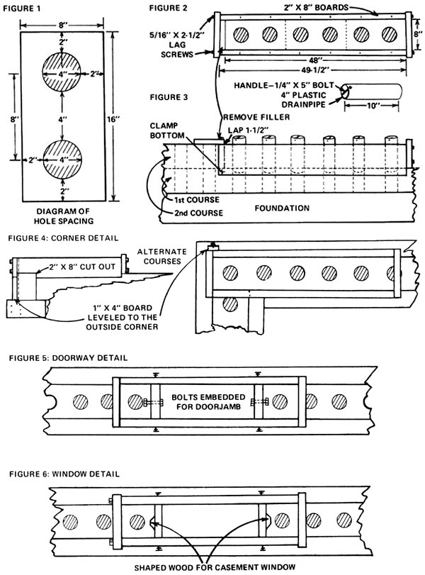

I really felt sorry for Jim DeKorne (MOTHER NO. 28) when he described how he filled all those concrete blocks with more concrete. I've had to do the same thing . . . never could lay a course straight. There is another alternative, though. What with paying 50 cents each for blocks, and then having to buy the cement to tamp into them, I figure it would be a little cheaper to cast one's own concrete building units in place.
Some forms I've designed for that purpose might, I think, be helpful to do-it-yourself builders. The accompanying diagrams show how they work. Fig. 1 is the layout of the 8" X 16" block, with the spacing of the holes noted. As you can see from Fig. 2-a plan of the form-the equivalent of three blocks is laid down in one pour. The holes are created around pieces of plastic drainpipe as each course goes up (Fig. 3). Fig. 4 shows the construction of corners, Fig. 5 is a detail of a doorway or crawl space and Fig. 6 indicates how to make a slot for a casement window or whatever.
Most block construction calls for an 8" X 16" footer. I'd suggest building forms for the wall's base from 2" X 8" boards, and then using the same lumber for the block forms after the footer is done. Several molds will make the concrete work go a lot faster.
The height of the block can be controlled by the form's end plates (see Fig. 2). If you goof on your measurements, just make the necessary correction by raising or lowering those pieces. Also, leveling can be adjusted by means of small wedges under the same panels.
A note on making the holes: Set the pipes in place, pour the concrete, wait about an hour and rotate the lengths of plastic a few times so they won't freeze in position.
My method can, of course, be used to cast block of different sizes. For instance, if you want to build a hotbed or compost bin with four-inch-thick walls, pour a 4" X 10" footer and use one-inch plastic pipe to form the holes.
Casting your own concrete units in position has several advantages. For one thing, if you're a weekend builder of a place in the country, you won't have to worry about someone ripping off your blocks in your absence. Or, if you're building and gardening too, you can just fill as many forms as you have time for and then go back to the bean patch. You'll be surprised how much concrete work you can get done using small forms . . . and it's interesting to see what other do-it-yourself ideas you can figure out.
|
|
 |
|